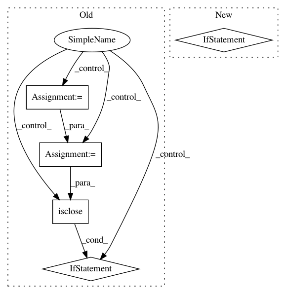

dccb5015ca3443c490aa4f1100892b0bfb5f957b,geomstats/riemannian_metric.py,RiemannianMetric,mean,#RiemannianMetric#Any#Any#Any#Any#Any#,241
Before Change
sq_dists_between_iterates = []
iteration = 0
while iteration < n_max_iterations:
a_tangent_vector = self.log(mean, mean)
tangent_mean = gs.zeros_like(a_tangent_vector)
logs = self.log(point=points, base_point=mean)
tangent_mean += gs.einsum("nk,nj->j", weights, logs)
tangent_mean /= sum_weights
mean_next = self.exp(
tangent_vec=tangent_mean,
base_point=mean)
sq_dist = self.squared_dist(mean_next, mean)
sq_dists_between_iterates.append(sq_dist)
variance = self.variance(points=points,
weights=weights,
base_point=mean_next)
if gs.isclose(variance, 0.)[0, 0]:
break
if (sq_dist <= epsilon * variance)[0, 0]:
break
mean = mean_next
After Change
mean = points[0]
if point_type == "vector":
mean = gs.to_ndarray(mean, to_ndim=2)
if point_type == "matrix":
mean = gs.to_ndarray(mean, to_ndim=3)
if n_points == 1:
return mean
sq_dists_between_iterates = []
In pattern: SUPERPATTERN
Frequency: 3
Non-data size: 5
Instances
Project Name: geomstats/geomstats
Commit Name: dccb5015ca3443c490aa4f1100892b0bfb5f957b
Time: 2018-12-31
Author: ninamio78@gmail.com
File Name: geomstats/riemannian_metric.py
Class Name: RiemannianMetric
Method Name: mean
Project Name: geomstats/geomstats
Commit Name: 01673d1a6dcb41a20e19f951ee450c44c07aeafd
Time: 2019-06-16
Author: ninamio78@gmail.com
File Name: geomstats/riemannian_metric.py
Class Name: RiemannianMetric
Method Name: mean
Project Name: chainer/chainerrl
Commit Name: 38c115e1bf3862010daf57107b90deee7626c8de
Time: 2018-10-09
Author: muupan@gmail.com
File Name: tests/agents_tests/test_ppo.py
Class Name: TestPPO
Method Name: _test_abc